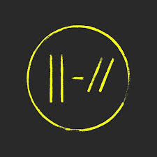
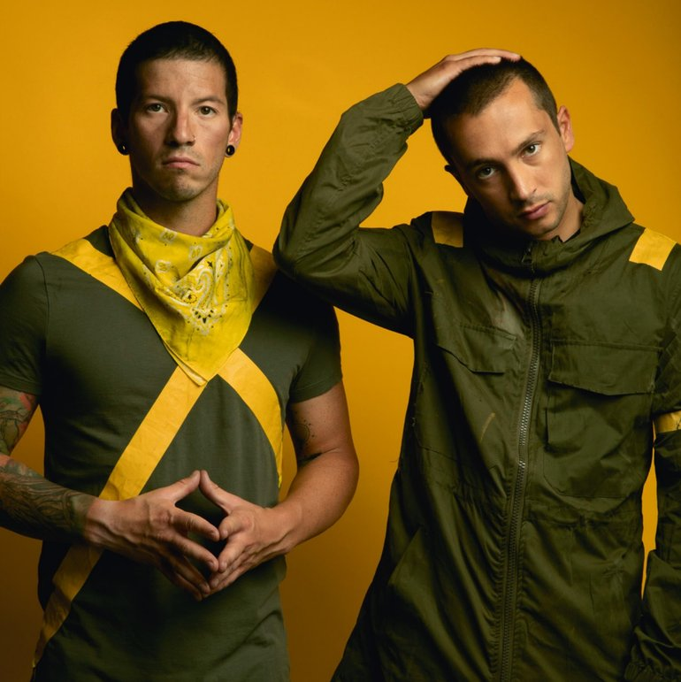

TWENTY ONE
PILOTS
Twenty One Pilots (estilizado como twenty one pilots ou twenty øne piløts) é um duo americano originário de Columbus, Ohio. A banda foi formada em 2009 e é composta por Tyler Joseph e Josh Dun. Eles lançaram dois álbuns independentes, Twenty One Pilots, em 2009, e Regional at Best, em 2011, antes de assinarem com a gravadora Fueled by Ramen, em 2012. Seu primeiro álbum com esta gravadora, Vessel, foi lançado em 2013. O duo alcançou um grande sucesso com seu quarto álbum, Blurryface, lançado em 2015.
 
A banda foi formada em 2009, em Columbus, Ohio, por amigos de faculdade. Eles eram: Tyler Joseph, Nick Thomas, Chris Salih. Tyler Joseph teve a ideia do nome da banda enquanto estudava "All My Sons", uma peça de Arthur Miller que contava a história de um homem que deve decidir o que é melhor para sua família depois de causar a morte de 21 pilotos durante a Segunda Guerra Mundial, porque ele conscientemente os enviou peças defeituosas para o bem de seu negócio. Josh Dun explicou que esta história de dilema moral foi a inspiração para o nome da banda. Em 29 de dezembro de 2009, eles lançaram seu álbum de estreia, intitulado Twenty One Pilots, e começaram um tour em Ohio.Em 2010, a banda lançou duas faixas inéditas oficialmente em sua conta no SoundCloud. Estas faixas incluíram um spin-off original de "Time to Say Goodbye", de Andrea Bocelli e Sarah Brightman, e um cover de "Jar of Hearts", de Christina Perri. Eles estavam originalmente disponíveis para download gratuito, embora a opção tenha sido removida desde então.
Seu segundo álbum, intitulado Regional at Best, foi lançado 08 de julho de 2011, com a nova formação constituída apenas por Tyler Joseph e Josh Dun. Em novembro de 2011, eles fizeram um show que esgotou ingressos na Columbus' Newport Music Hall, atraindo a atenção de várias gravadoras. Embora muitas gravadoras tenham brigado pela banda, Tyler Joseph e Josh Dun decidiram assinar com a Atlantic Records pelo subsidiário Fueled by Ramen.